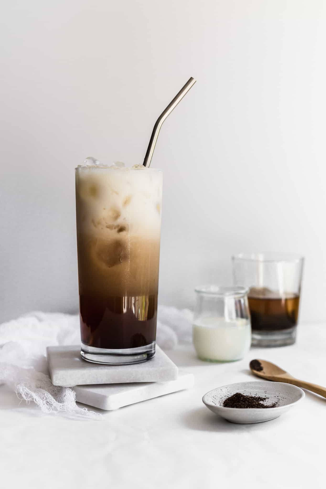

Hojicha Latte

Description:
A roasted green tea brewed with oatmilk
Ingredients
- ½ cup ice
- 180 ml oat milk
- 2 teaspoons of Hojicha Powder
- 60 ml cold filtered water
- 1 tablespoon maple syrup
Steps:
- Add ½ cup of ice to a tall glass.
- Pour 180 ml of oat milk over the ice.
- If desired, add 1 tablespoon maple syrup and stir gently.
- In a chawan (tea bowl), whisk 2 teaspoons of hojicha powder and 60 ml of cold filtered water until fully dissolved.
- Gently pour your whisked hojicha directly onto one of the ice cubes to create the layered effect.
- Enjoy your picture perfect iced hojicha latte!